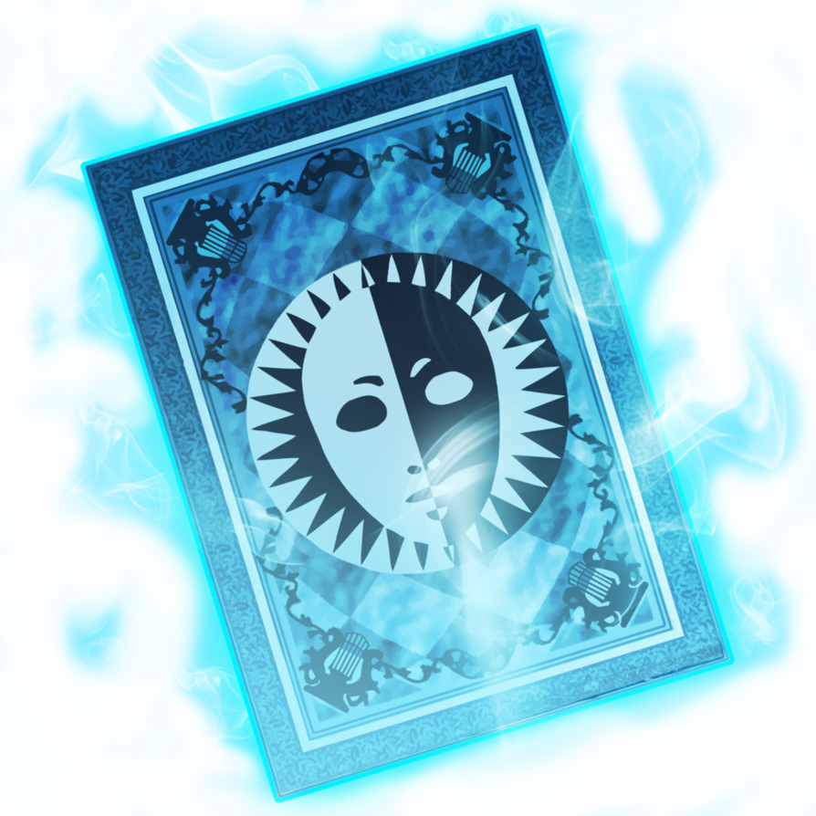

Persona 3

Why Persona 4 is amazing
- Made with The style of the 80's
- The music is made to sound like a modern 80's funk band is playing.
- The menus uses transitions that seem to be inspired by 80's cartoons
- The entire game uses yellow pallete for everything.
- Memerable characters
- Each character you meet a fleshed out story that make you feel want to be their friend
- You are able to choose whose you want to hang out with you free time. This makes each character you spend time with even more memorable.

Characters
- Yu Narokami
- Chie satonaka
- Rise Kujikawa
- Naoto Shirogame
- Yosuke Hanamura
- Yukiko Amagi
- Kanji Tatsumi
Decription
Persona is Jrpg series that was released for the PS1 PS2 and was later released on PS Vita and PS3.
Evolution of the franchise!
The franchise first appeared on the PS1. Although The franchise did not become a hit until it appeared on the PS2 with Persona 3. Persona 3 the first game in the franchise to include the social link system. The addition of that system made persona the franchise it is today.